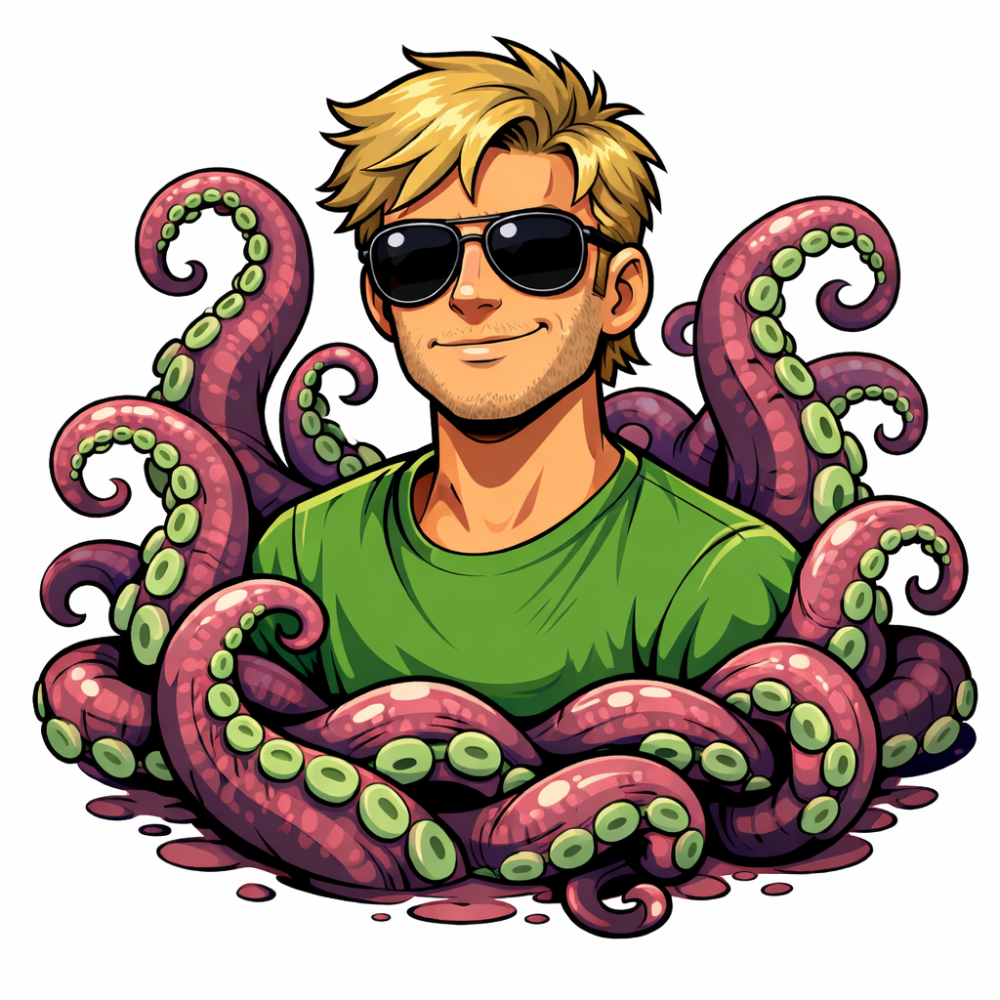

Bem-vindo ao meu site!
Jogar Jogo do Avião ✈️ Jogar Jogo de Parkour: parkour V7 Jogar Jogo de Parkour: Corrida Urbana: SP Jogar Jogo de Parkour: escadinha Jogar Jogo do Helicóptero: SkyFlight: Megacidade Jogar Jogo: Quiz Aviação Jogar Jogo: Quiz Aviação 2 Jogar Jogo: Quiz Aviação 3 Jogar Jogo: Quiz Aviação 4 Jogar Jogo: Quiz Aviação 5 Jogar Jogo: Quiz Aviação 6 Jogar Jogo: Quiz Aviação 7 Jogar Jogo: Quiz Aviação 8 Jogar Jogo: Quiz Aviação 9 Jogar Jogo: Quiz Aviação 10 Jogar Jogo: Quiz Aviação 11 Jogar Jogo: Quiz Aviação 12 Jogar Jogo: Quiz Aviação 13 Jogar Jogo: Quiz Aviação 14 Jogar Jogo: Quiz Aviação 15 Jogar Jogo: Quiz Aviação 16 Jogar Jogo: Quiz Aviação 17 Jogar Jogo: Quiz Aviação 18 Jogar Jogo: Quiz Aviação 19 Jogar Jogo: Quiz Aviação 20 Jogar Jogo: Quiz Aviação 21 Jogar Jogo: Quiz Aviação 22 Jogar Jogo: Quiz Aviação 23 Jogar Jogo: Quiz Aviação 24 Jogar Jogo: Quiz Aviação 25 Jogar Jogo: Quiz Aviação 26